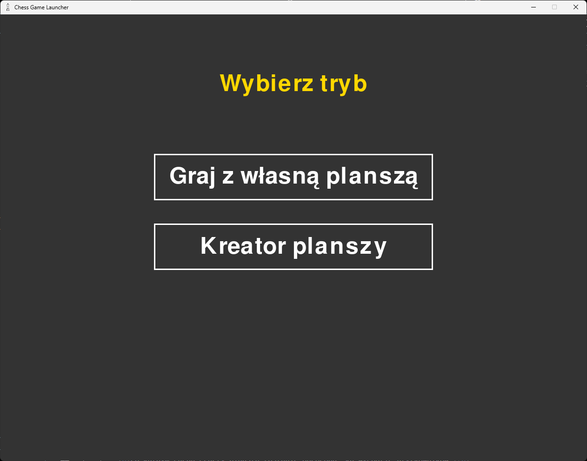
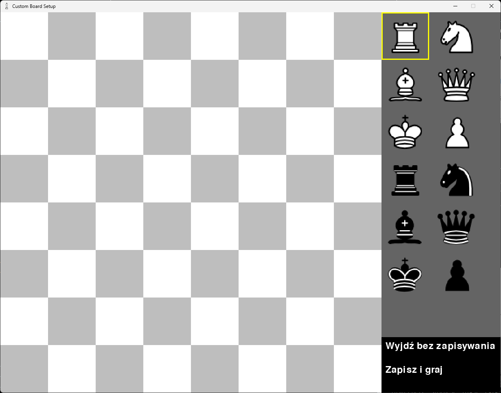
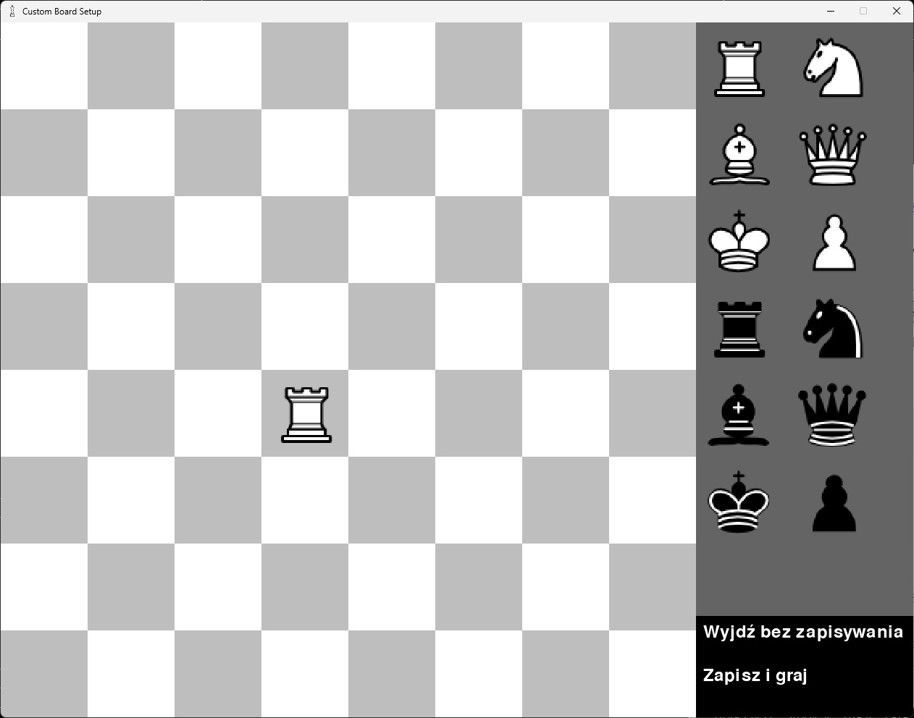

Po wybraniu opcji niestandardowej planszy zostaniemy przywitani takim ekranem:
Przycisk Graj z własną planszą pozwala na grę z przyjacielem na stworzonej wcześniej przez nas planszy.
Przycisk Kreator planszy pozwala na utworzenie nowej, niestandardowej planszy (układu figur).
Aby utworzyć własną planszę, po wybraniu opcji Kreator planszy, należy :
- Nacisnąć lewym przyciskiem myszy na figurę, którą chcemy umieścić:
 - Nacisnąć lewym przyciskiem myszy na pole, gdzie chcemy umieścić figurę:
 - Aby usunąć figurę z danego pola, wystarczy kliknąć na nią lewym przyciskiem myszy.
- Powtarzać etapy 1, 2 i 3 do momentu stworzenia porządanej przez nas pozycji. Wtedy możemy opuścić edytor przez użycie przycisków Wyjdź bez zapisywania lub Zapisz i graj.
W drugim przypadku plansza zostanie zapisana, i będzie możliwa gra na niej poprzez wybranie opcji Niestandardowa plansza w ekranie głównym, a później przycisku Graj z własną planszą.
Warto zwrócić uwagę na fakt, iż edytor nie pozwoli nam na zaczęcie gry, podczas gdy ustawimy nielegalną pozycję (m.in. brak 1 lub 2 króli, szach na początku gry). Plansza jest zapisywana w custom_board.fen, więc możesz do tego pliku wrzucić swojego fena, aby od niego zacząć.
Po każdym ruchu graczy plansza zostanie obrócona, ku wygodzie użytkowników.
Przydatne strony:
Gra z przyjacielem